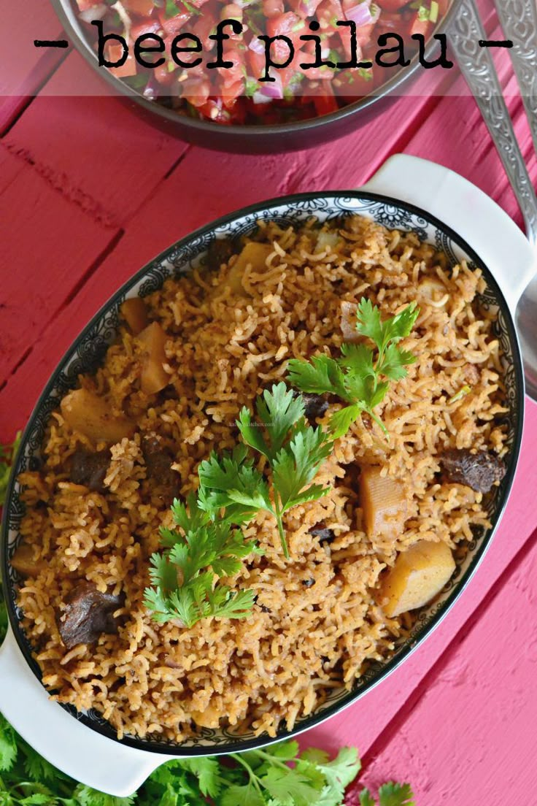

Beef Pilau

Description
A rich and flavorful East African rice dish cooked with aromatic spices
and tender beef. Perfect for special occasions and family meals.
Ingredients
- 2 cups rice
- 500g beef
- 1 onion
- 2 tomatoes
- Pilau masala
- Garlic and ginger
- Cooking oil
- Salt
Steps
- Fry onions until golden brown.
- Add garlic, ginger, and pilau masala.
- Add beef and cook until tender.
- Add tomatoes and cook until soft.
- Add rice and water, then simmer until cooked.
Back to Home